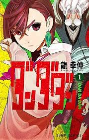
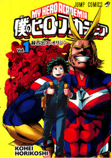

DanDaDan
Dandadan é uma história de ação sobrenatural sobre a amizade entre Momo Ayase, que acredita em fantasmas, e Ken Takakura (Okarun), que acredita em alienígenas. Após uma aposta para provar que o outro está errado, eles visitam lugares associados às suas crenças, mas acabam provando que ambos estão certos e precisam se unir para combater forças sobrenaturais.
Boku no Hero
Boku no Hero Academia conta a história de Izuku Midoriya, um garoto que nasce sem "Individualidades" (poderes) em um mundo onde 80% da população possui alguma habilidade. O sonho dele de ser um herói, inspirado pelo herói número 1, All Might, é finalmente realizado quando ele herda o poder de seu ídolo, o "One for All". Ele então entra na Academia U.A. para se tornar um herói profissional, aprendendo que a jornada envolve não apenas poder, mas também coragem, sacrifício e trabalho em equipe
| Nome | Gênero | Logo |
|---|---|---|
| DanDaDan | Sobrenatural |  |
| Boku no Hero | Drama |  |